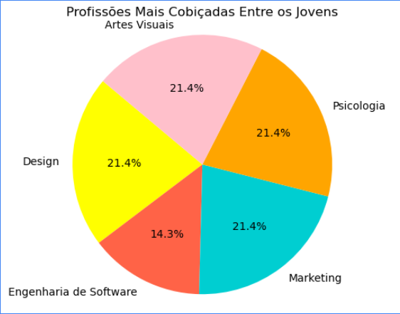

-Infojobs: Link para o infojobs
-Ciee: Link para o Ciee
-Indeed: Link para o Indeed
-Inklua: Link para o Inklua
Realizamos uma pesquisa no Senac Aclimação para saber quais são as profissões mais cobiçada entre os jovens. As profissões desejadas segundo a pesquisa feita são: Artes Visuais, Design, Marketing, Psicologia, Engenharia de Software
